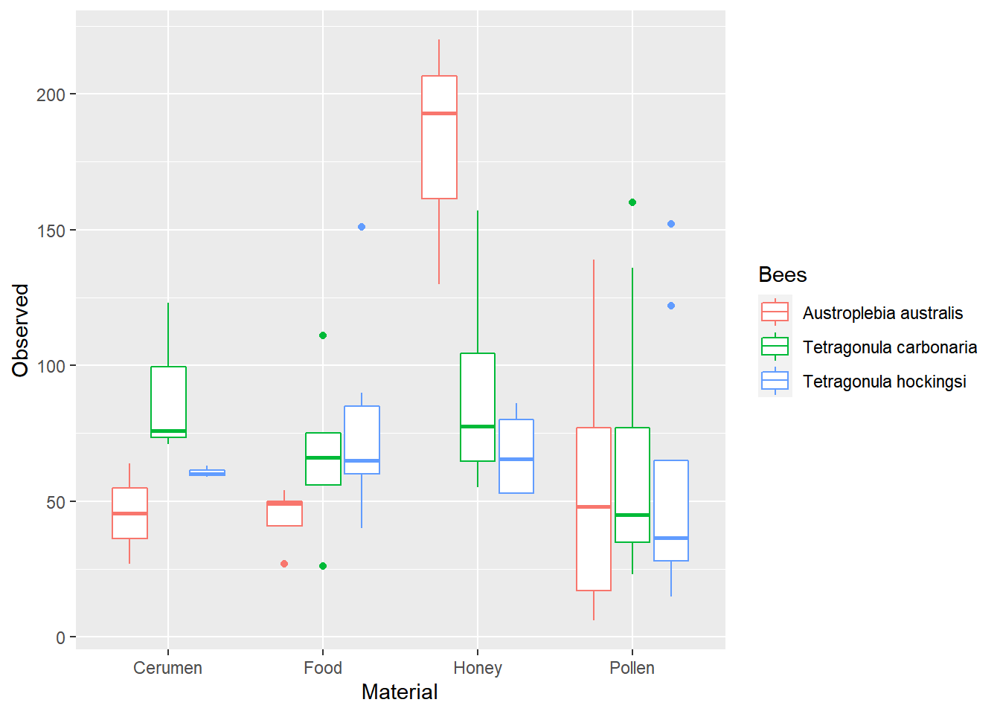
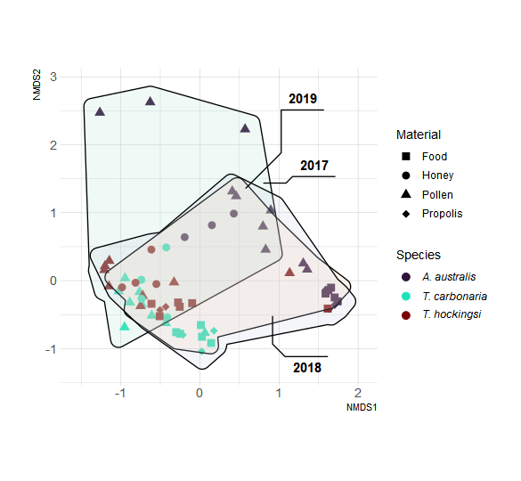
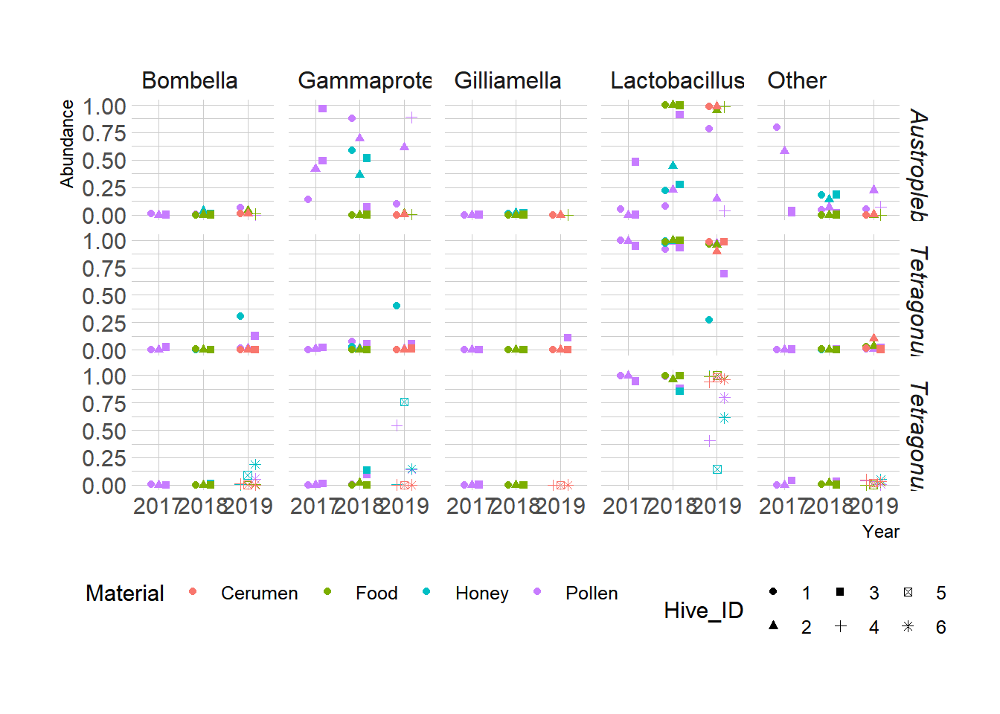
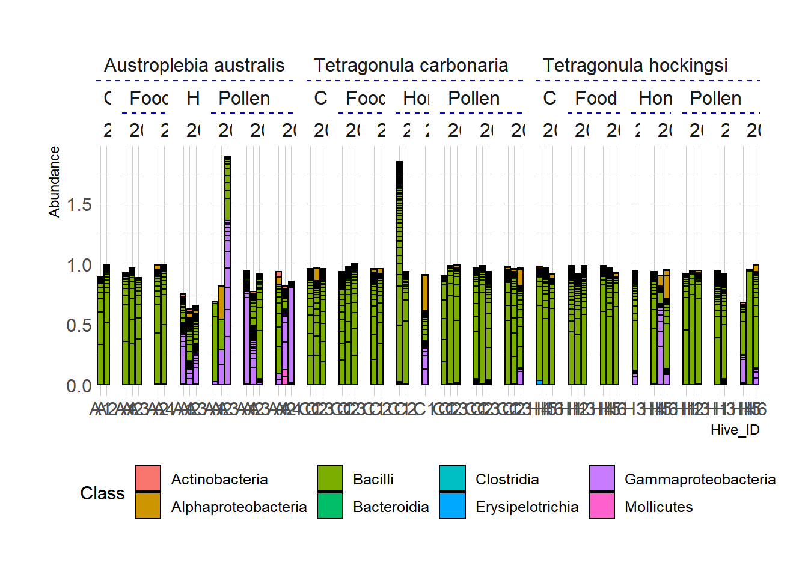

library(phyloseq)
library(qiime2R)
library(tidyverse)
library(magrittr)
library(microbiome)
library(vegan)
library(ggforce)
library(hrbrthemes)
library(ggh4x)
library(ggtext)
source("functions.R")Exploratory Analysis
Boyd Tarlinton ![]()
Caroline Hauxwell
#kableextra!
Load Data
hiveMB_1 <- readQIIMEFolder("QIIME_Processing_1")
hiveMB_2 <- readQIIMEFolder("QIIME_Processing_2")
hiveMB <- merge_phyloseq(hiveMB_1, hiveMB_2)
sample_data(hiveMB) <- read_tsv("Metadata_03082020.tsv") |>
column_to_rownames("ID")Rows: 64 Columns: 11
── Column specification ────────────────────────────────────────────────────────
Delimiter: "\t"
chr (11): ID, Name, Bees, Hive_ID, Material, Date_Harvest, Date_Extracted, l...
ℹ Use `spec()` to retrieve the full column specification for this data.
ℹ Specify the column types or set `show_col_types = FALSE` to quiet this message.##Filter Samples
hiveMB <- removeNonbacterial(hiveMB)
hiveMB <- hiveMB |>
subset_samples(Material != "Larvae")Plot Alpha Diversity
alphaDiv <- estimate_richness(hiveMB,
measures = c("Observed")) |>
cbind(data.frame(sample_data(hiveMB)))
ggplot(alphaDiv, aes(x = Material,
y = Observed,
color = Bees)) +
geom_boxplot()
Beta Diversity
Perform Ordination
sample_data(hiveMB) <- sample_data(hiveMB) |>
data.frame() |>
mutate(Year = str_extract(Date_Harvest, "\\d{4}$"),
Year = str_replace(Year, "2020", "2019")) |>
data.frame()
hiveMBRel <- hiveMB |>
makeObservationsRelative()
custPal <- viridis::turbo(n = 4)[c(1:2, 4)]
ord <- ordinate(hiveMBRel,
distance = "bray",
method = "NMDS",
k = 4,
maxit = 1000,
trace = 0)
ordCall: metaMDS(comm = veganifyOTU(physeq), distance = distance, k = 4, trace = 0, maxit = 1000)
global Multidimensional Scaling using monoMDS
Data: veganifyOTU(physeq) Distance: bray
Dimensions: 4 Stress: 0.08891788 Stress type 1, weak ties Two convergent solutions found after 20 tries Scaling: centring, PC rotation, halfchange scaling Species: expanded scores based on ‘veganifyOTU(physeq)’
ordPlot <- plot_ordination(hiveMBRel,
ord,
shape = "Material",
color = "Bees") +
geom_point(size = 3) +
theme_ipsum(base_family = "sans") +
geom_mark_hull(aes(x = NMDS1,
y = NMDS2,
fill = Year,
label = Year),
inherit.aes = FALSE,
label.fill = NA,
concavity = 3,
alpha = 0.2) +
scale_colour_manual(values = custPal, "Species",
labels = c(expression(paste(italic("A. australis"))),
expression(paste(italic("T. carbonaria"))),
expression(paste(italic("T. hockingsi"))))) +
scale_fill_brewer(palette = "Pastel2", guide = "none") +
scale_shape_manual(values = c(15, 16, 17, 18)) +
theme(legend.text.align = 0,
text = element_text(family = "sans")) +
scale_x_continuous(expand = expansion(add = 0.25)) +
scale_y_continuous(expand = expansion(add = 0.5)) +
coord_fixed()
tmp <- tempfile()
ggsave(tmp, ordPlot, device = "svg", bg = "white", width = 6.5, height = 6)
rsvg::rsvg_png(tmp, "Figures/Figure1.png")
dist <- phyloseq::distance(hiveMB, method = "bray")
adonis2(dist ~ Bees + Material + Year + Hive_ID,
as(sample_data(hiveMB), "data.frame"))Permutation test for adonis under reduced model
Terms added sequentially (first to last)
Permutation: free
Number of permutations: 999
adonis2(formula = dist ~ Bees + Material + Year + Hive_ID, data = as(sample_data(hiveMB), "data.frame"))
Df SumOfSqs R2 F Pr(>F)
Bees 2 4.3642 0.17736 7.9115 0.001 ***
Material 3 3.8569 0.15674 4.6613 0.001 ***
Year 2 1.0702 0.04349 1.9402 0.004 **
Hive_ID 10 3.1795 0.12921 1.1528 0.124
Residual 44 12.1356 0.49319
Total 61 24.6064 1.00000
---
Signif. codes: 0 '***' 0.001 '**' 0.01 '*' 0.05 '.' 0.1 ' ' 1Sample COmposition
relMelted <- hiveMB |>
makeObservationsRelative() |>
psmelt()
relMelted |>
mutate(Clade = case_when(Genus == "Lactobacillus" ~ Genus,
Genus == "Bombella" ~ Genus,
Genus == "Gilliamella" ~ Genus,
Class == "Gammaproteobacteria" ~ Class,
TRUE ~ "Other"),
Year = str_extract(Date_Harvest, "\\d{4}"),
Year = case_when(Year == "2020" ~ "2019",
TRUE ~ Year),
Hive_ID = substr(Hive_ID, 2, 2)) |>
group_by(Sample, Bees, Year, Material, Clade, Hive_ID) |>
summarise(Abundance = sum(Abundance)) |>
ggplot(aes(x = Year, y = Abundance, shape = Hive_ID, color = Material, group = Hive_ID)) +
geom_point(position = position_dodge(width = 0.5)) +
facet_grid(Bees ~ Clade, labeller = label_wrap_gen()) +
hrbrthemes::theme_ipsum() +
theme(legend.position = "bottom",
panel.spacing = unit(0.5, "lines"),
strip.text.y = element_text(face = "italic"))`summarise()` has grouped output by 'Sample', 'Bees', 'Year', 'Material',
'Clade'. You can override using the `.groups` argument.Warning in grid.Call(C_stringMetric, as.graphicsAnnot(x$label)): font family not
found in Windows font database
Warning in grid.Call(C_stringMetric, as.graphicsAnnot(x$label)): font family not
found in Windows font databaseWarning in grid.Call(C_textBounds, as.graphicsAnnot(x$label), x$x, x$y, : font
family not found in Windows font database
Warning in grid.Call(C_textBounds, as.graphicsAnnot(x$label), x$x, x$y, : font
family not found in Windows font databaseWarning in grid.Call(C_stringMetric, as.graphicsAnnot(x$label)): font family not
found in Windows font databaseWarning in grid.Call(C_textBounds, as.graphicsAnnot(x$label), x$x, x$y, : font
family not found in Windows font databaseWarning in grid.Call(C_stringMetric, as.graphicsAnnot(x$label)): font family not
found in Windows font databaseWarning in grid.Call(C_textBounds, as.graphicsAnnot(x$label), x$x, x$y, : font
family not found in Windows font database
Warning in grid.Call(C_textBounds, as.graphicsAnnot(x$label), x$x, x$y, : font
family not found in Windows font database
Warning in grid.Call(C_textBounds, as.graphicsAnnot(x$label), x$x, x$y, : font
family not found in Windows font databaseWarning in grid.Call.graphics(C_text, as.graphicsAnnot(x$label), x$x, x$y, :
font family not found in Windows font database
Warning in grid.Call.graphics(C_text, as.graphicsAnnot(x$label), x$x, x$y, :
font family not found in Windows font database
Warning in grid.Call.graphics(C_text, as.graphicsAnnot(x$label), x$x, x$y, :
font family not found in Windows font database
Warning in grid.Call.graphics(C_text, as.graphicsAnnot(x$label), x$x, x$y, :
font family not found in Windows font database
Warning in grid.Call.graphics(C_text, as.graphicsAnnot(x$label), x$x, x$y, :
font family not found in Windows font database
Warning in grid.Call.graphics(C_text, as.graphicsAnnot(x$label), x$x, x$y, :
font family not found in Windows font database
Warning in grid.Call.graphics(C_text, as.graphicsAnnot(x$label), x$x, x$y, :
font family not found in Windows font databaseWarning in grid.Call(C_textBounds, as.graphicsAnnot(x$label), x$x, x$y, : font
family not found in Windows font database
Warning in grid.Call(C_textBounds, as.graphicsAnnot(x$label), x$x, x$y, : font
family not found in Windows font databaseWarning in grid.Call.graphics(C_text, as.graphicsAnnot(x$label), x$x, x$y, :
font family not found in Windows font databaseWarning in grid.Call(C_textBounds, as.graphicsAnnot(x$label), x$x, x$y, : font
family not found in Windows font database
Warning in grid.Call(C_textBounds, as.graphicsAnnot(x$label), x$x, x$y, : font
family not found in Windows font database
Warning in grid.Call(C_textBounds, as.graphicsAnnot(x$label), x$x, x$y, : font
family not found in Windows font database
Warning in grid.Call(C_textBounds, as.graphicsAnnot(x$label), x$x, x$y, : font
family not found in Windows font database
makeObservationsRelative(hiveMB) |>
makeObservationsRelative() |>
prevalenceFilter(threshold = 0.05) |>
plot_bar(fill = "Class", x = "Hive_ID") +
facet_nested(~ Bees + Material + Year, scales = "free_x",
space = "free_x",
nest_line = element_line(linetype = 2)) +
theme_ipsum() +
theme(panel.spacing = unit(0.5, "lines"),
legend.position = "bottom",
ggh4x.facet.nestline = element_line(colour = "blue"))Warning in grid.Call(C_textBounds, as.graphicsAnnot(x$label), x$x, x$y, : font
family not found in Windows font database
Warning in grid.Call(C_textBounds, as.graphicsAnnot(x$label), x$x, x$y, : font
family not found in Windows font database
Warning in grid.Call(C_textBounds, as.graphicsAnnot(x$label), x$x, x$y, : font
family not found in Windows font database
Warning in grid.Call(C_textBounds, as.graphicsAnnot(x$label), x$x, x$y, : font
family not found in Windows font database
Warning in grid.Call(C_textBounds, as.graphicsAnnot(x$label), x$x, x$y, : font
family not found in Windows font databaseWarning in grid.Call.graphics(C_text, as.graphicsAnnot(x$label), x$x, x$y, :
font family not found in Windows font databaseWarning in grid.Call(C_textBounds, as.graphicsAnnot(x$label), x$x, x$y, : font
family not found in Windows font databaseWarning in grid.Call.graphics(C_text, as.graphicsAnnot(x$label), x$x, x$y, :
font family not found in Windows font databaseWarning in grid.Call(C_textBounds, as.graphicsAnnot(x$label), x$x, x$y, : font
family not found in Windows font databaseWarning in grid.Call.graphics(C_text, as.graphicsAnnot(x$label), x$x, x$y, :
font family not found in Windows font databaseWarning in grid.Call(C_textBounds, as.graphicsAnnot(x$label), x$x, x$y, : font
family not found in Windows font database
Warning in grid.Call(C_textBounds, as.graphicsAnnot(x$label), x$x, x$y, : font
family not found in Windows font database
Session Info
sessionInfo()R version 4.2.1 (2022-06-23 ucrt)
Platform: x86_64-w64-mingw32/x64 (64-bit)
Running under: Windows 10 x64 (build 19043)
Matrix products: default
locale:
[1] LC_COLLATE=English_Australia.utf8 LC_CTYPE=English_Australia.utf8
[3] LC_MONETARY=English_Australia.utf8 LC_NUMERIC=C
[5] LC_TIME=English_Australia.utf8
attached base packages:
[1] stats graphics grDevices utils datasets methods base
other attached packages:
[1] ggtext_0.1.1 ggh4x_0.2.2 hrbrthemes_0.8.0 ggforce_0.3.4
[5] vegan_2.6-2 lattice_0.20-45 permute_0.9-7 microbiome_1.18.0
[9] magrittr_2.0.3 forcats_0.5.2 stringr_1.4.1 dplyr_1.0.9
[13] purrr_0.3.4 readr_2.1.2 tidyr_1.2.0 tibble_3.1.7
[17] ggplot2_3.3.6 tidyverse_1.3.2 qiime2R_0.99.6 phyloseq_1.40.0
loaded via a namespace (and not attached):
[1] readxl_1.4.1 backports_1.4.1 Hmisc_4.7-1
[4] systemfonts_1.0.4 plyr_1.8.7 igraph_1.3.2
[7] splines_4.2.1 GenomeInfoDb_1.32.3 digest_0.6.29
[10] foreach_1.5.2 htmltools_0.5.2 viridis_0.6.2
[13] qpcR_1.4-1 fansi_1.0.3 checkmate_2.1.0
[16] googlesheets4_1.0.1 cluster_2.1.3 tzdb_0.3.0
[19] Biostrings_2.64.0 modelr_0.1.9 extrafont_0.18
[22] vroom_1.5.7 svglite_2.1.0 extrafontdb_1.0
[25] jpeg_0.1-9 colorspace_2.0-3 rvest_1.0.3
[28] textshaping_0.3.6 haven_2.5.1 xfun_0.31
[31] crayon_1.5.1 RCurl_1.98-1.7 jsonlite_1.8.0
[34] survival_3.3-1 iterators_1.0.14 ape_5.6-2
[37] glue_1.6.2 polyclip_1.10-0 gtable_0.3.1
[40] gargle_1.2.0 zlibbioc_1.42.0 XVector_0.36.0
[43] V8_4.2.1 Rhdf5lib_1.18.2 Rttf2pt1_1.3.10
[46] DEoptimR_1.0-11 BiocGenerics_0.42.0 scales_1.2.1
[49] DBI_1.1.3 Rcpp_1.0.8.3 viridisLite_0.4.1
[52] gridtext_0.1.4 htmlTable_2.4.1 bit_4.0.4
[55] foreign_0.8-82 Formula_1.2-4 rsvg_2.3.1
[58] stats4_4.2.1 DT_0.24 truncnorm_1.0-8
[61] htmlwidgets_1.5.4 httr_1.4.4 RColorBrewer_1.1-3
[64] ellipsis_0.3.2 pkgconfig_2.0.3 NADA_1.6-1.1
[67] farver_2.1.1 nnet_7.3-17 dbplyr_2.2.1
[70] deldir_1.0-6 utf8_1.2.2 labeling_0.4.2
[73] tidyselect_1.1.2 rlang_1.0.4 reshape2_1.4.4
[76] munsell_0.5.0 cellranger_1.1.0 tools_4.2.1
[79] cli_3.3.0 generics_0.1.3 ade4_1.7-19
[82] broom_1.0.1 evaluate_0.16 biomformat_1.24.0
[85] fastmap_1.1.0 ragg_1.2.2 yaml_2.3.5
[88] bit64_4.0.5 knitr_1.40 fs_1.5.2
[91] robustbase_0.95-0 rgl_0.109.6 nlme_3.1-158
[94] xml2_1.3.3 concaveman_1.1.0 compiler_4.2.1
[97] rstudioapi_0.14 curl_4.3.2 png_0.1-7
[100] zCompositions_1.4.0-1 reprex_2.0.2 tweenr_2.0.1
[103] stringi_1.7.6 gdtools_0.2.4 Matrix_1.4-1
[106] multtest_2.52.0 vctrs_0.4.1 pillar_1.8.1
[109] lifecycle_1.0.1 rhdf5filters_1.8.0 data.table_1.14.2
[112] bitops_1.0-7 R6_2.5.1 latticeExtra_0.6-30
[115] gridExtra_2.3 IRanges_2.30.0 codetools_0.2-18
[118] MASS_7.3-57 assertthat_0.2.1 rhdf5_2.40.0
[121] minpack.lm_1.2-2 withr_2.5.0 S4Vectors_0.34.0
[124] GenomeInfoDbData_1.2.8 mgcv_1.8-40 parallel_4.2.1
[127] hms_1.1.2 grid_4.2.1 rpart_4.1.16
[130] rmarkdown_2.16 googledrive_2.0.0 Rtsne_0.16
[133] Biobase_2.56.0 lubridate_1.8.0 base64enc_0.1-3
[136] interp_1.1-3